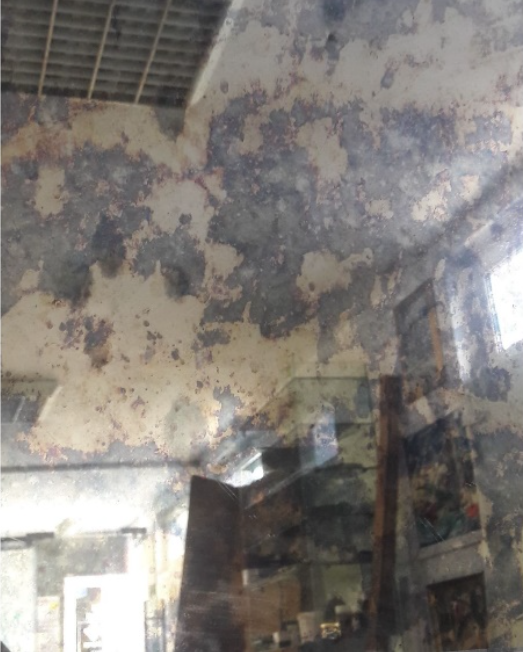
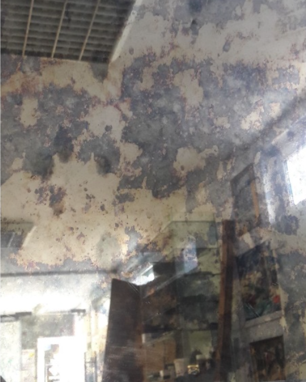

METODE: ARGINTARE SAU ALUMINIZARE
1. Până de curând, cea mai comună tehnologie de metalizare în oglindă era argintarea. Soluția de argint este o soluție alcalină de nitrat de argint. Primul pas e de a obține zahărul invertit , prin fierberea zahărului obișnuit cu acid sulfuric. Ca rezultat al hidrolizei, se formează un amestec de glucoză care conține o grupare aldehidă. Sub acțiunea glucozei, argintul metalic este redus și depus pe suprafața sticlei. Procesul de argintare durează 5 - 10 minute. Grosimea peliculei de argint este de 0,15 - 0,3 microni.Pentru a obține o peliculă mai groasă, argintarea poate fi efectuată de două ori (turnare dublă).
 

Există câteva diferențe semnificative între argintarea și aluminizarea oglinzilor:

MAȘINĂRIA DE TEȘIT OGLINDA
Teșirea include șlefuirea și lustruirea ulterioară a marginii oglinzii la un anumit unghi față de planul foii care este prelucrată. Fațeta, adică marginea sticlei prelucrată la un anumit unghi, dă marginilor oglinzii o formă aleasă de cumpărător și înlătură oricare imperfecțiuni care nu au fost înlăturate la tăiere. Există două tipuri de fațete: abrupte și late.
Sticla cu fațetă abruptă este prelucrată la un unghi de aproximativ 40-50 ° față de suprafața sticlei, lățimea sa este de 4-8 mm. Sticla cu fațetă ascuțită este destinată fabricării de oglinzi de dimensiuni medii și parțial mici (de călătorie, manuală etc.). Pe partea din spate a oglinzii prelucrate, pentru a preveni apariția fisurilor, se lasă o margine de 2–3 mm de-a lungul întregului perimetru.